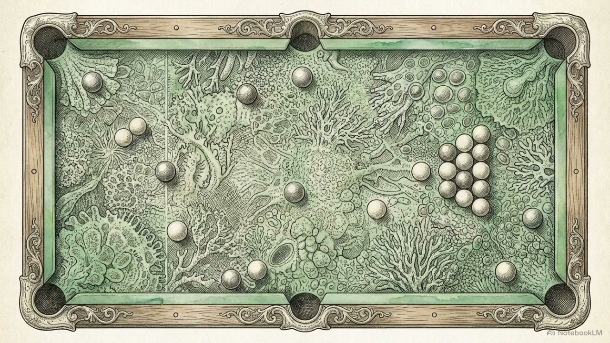
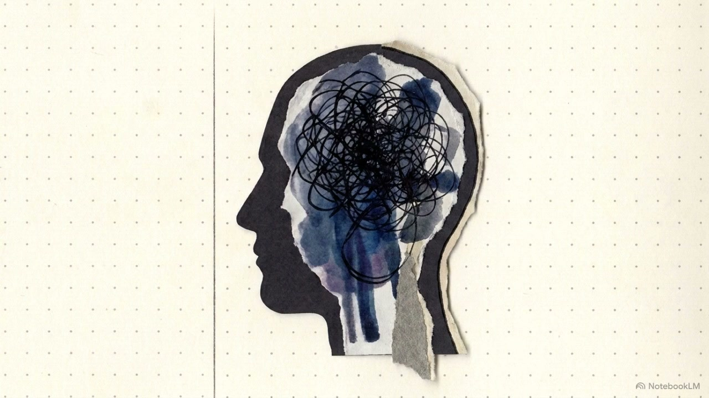
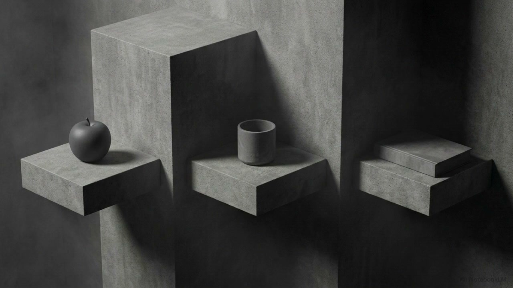
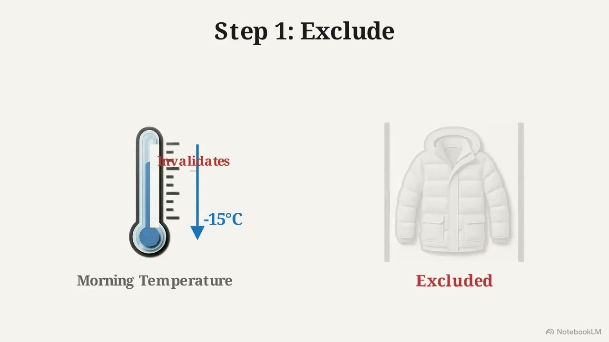
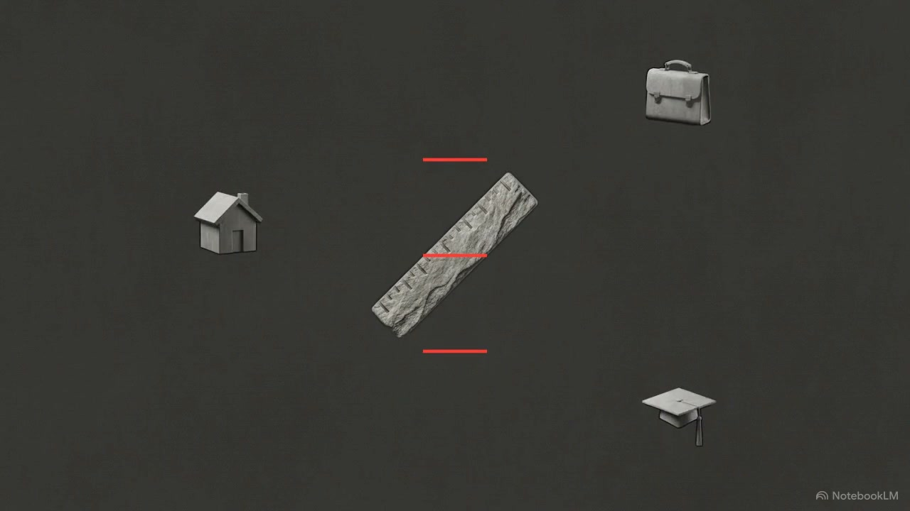
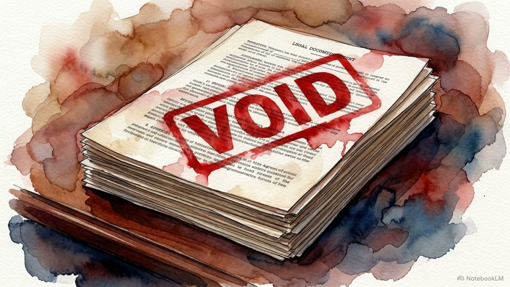
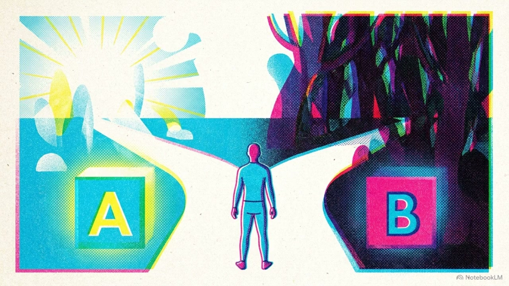
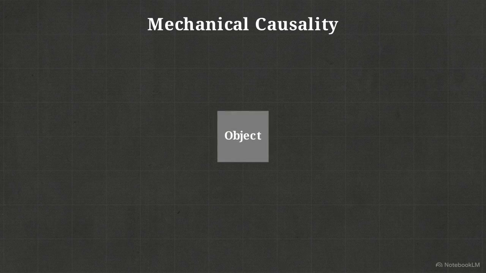
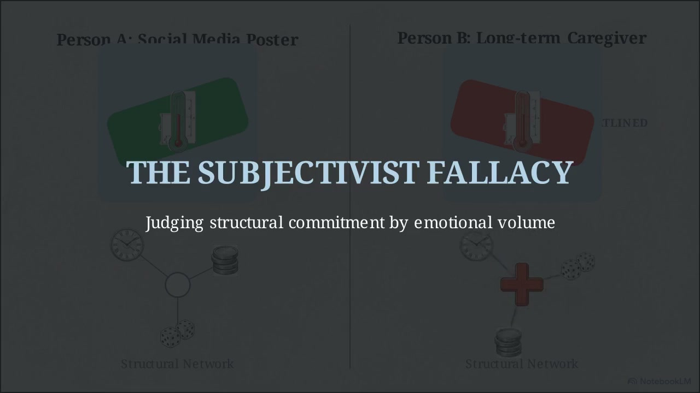
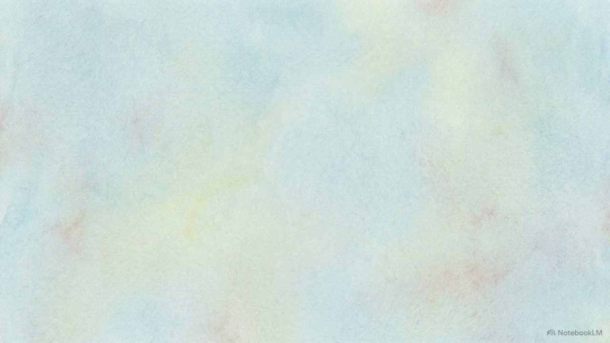

Q00 · 序章
在对象相关之前，它们如何成为“它们”？
从早晨拿起一杯水开始，经过稳定、水平因果、选择与沉积，回到 SRT 的第零问。
从早晨伸手拿起一杯水开始，追问那个常被跳过的第零问：在对象彼此相关之前，它们如何先成为“它们”？
从早晨拿起一杯水开始，经过稳定、水平因果、选择与沉积，回到 SRT 的第零问。
从梦、桌子和北斗七星开始，拆开“当然在那里”的生成条件。

从语言、音乐和胚胎发育出发，追问对象化如何把流动切成可握住的现实。

从一段想不起歌名的旋律、两个找不到杯子的房间，到 CT 片上的边界问题，寻找对象与虚无之外的第三种位置。
从陌生城市里的微小偏好开始，在蓝图与纯随机之间追问：生成为什么不是从零开始？

追问选择如何先获得可被选择的材料。

从挑选与生成的差别，重新理解选择。
选择留下的未竟路径，并不会从现实中消失。

对象如何在流动中获得可辨认的稳定。

从路径被写入的时刻，理解不可逆性。
沉积下来的后果，构成现实的厚度。
当选择的历史变得理所当然，秩序便出现了。

秩序不仅提供地面，也预先塑造可见的选择。

攸关不是抽象的兴趣，而是现实进入自身的方式。

从在乎的经验出发，理解价值如何进入现实。

价值不是任意偏好，而是会组织选择与后果的方向。